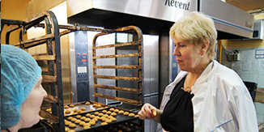
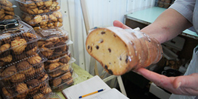

Новости и обьявления
5 марта 2015 года на базе Оренбургского потребительского общества состоялось Двадцать восьмое (90-е) общее отчетное собрание представителей потребительских обществ.
 Сезон ярмарок стартовалЧисленность обслуживаемого населения составляет свыше 300 тысяч человек, в том числе сельского 154 тысячи человек. Потребительская кооперация является крупным работодателем на селе: в ней работают более двух тысяч человек.
Cостоялся областной конкурс продавцовПравление Облпотребсоюза и Обком профсоюза работников потребкооперации провели второй тур областного конкурса профессионального, который проходил 23-24 августа, приняли кооперативные организации Облпотребсоюза.
 Инструкция по исправлению карточек задвоенных контрагентовВ условиях рыночной экономики потребкооперация призвана стимулировать деловую активность сельских жителей, защищать их права и интересы, способствовать повышению благосостояния селян.
История Оренбургского Облпотребсоюза
Оренбургский областной союз потребительских обществ создан в январе 1935 года и в него вошло 383 потребительских обществ. В начале 30-х годов потребительская кооперация занимал в общем товарообороте области - 84%, государственная торговля около 9%, остальное приходилось на долю частной торговли, которая в последствие была вытеснена.
Оренбургские кооператоры уделяли большое внимание культурно-просветительной работе среди широких масс трудового народа. На первых порах разъясняли цели и задачи кооперации на страницах периодической печати путём проведения бесед, лекций на кооперативные темы.
Проводя эту работу, кооператоры губернии стремились привлечь молодежь и женщин в работу потребительской кооперации. Деятельность направлялась на создание библиотек, детских площадок, яслей, проведение курсов, лекций, спектаклей, вечеров отдыха, изб-читален, распространение газет, ликвидацию неграмотности среди пайщиков, подборку литературы по кооперативным вопросам, создание в магазинах уголков матери и младенчества, содержание коек в родильных домах, больницах для пайщиков, открытие акушерских, фельдшерских пунктов и т.д.
Широко использовалось для этих целей радио и кино. По линии потребительской кооперации в селах Оренбуржья было оборудовано 35 радиоустановок, в том числе совместно с сельсоветами – 10, около 500 радиоточек. До 1930г. вся сеть кинопередвижек и нескольких стационаров в губернии принадлежали потребительской кооперации.